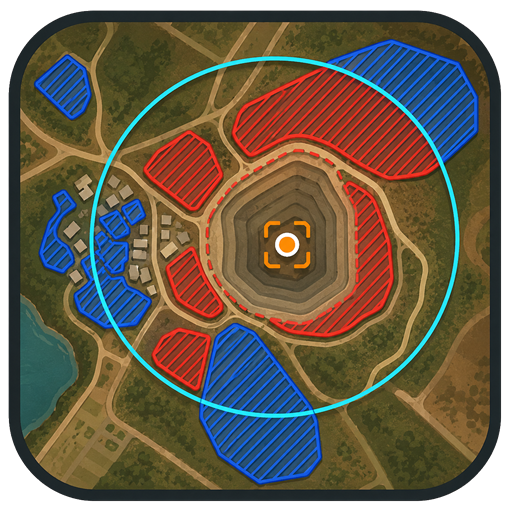

A prancha do croqui permanece independente. Valide os dados operacionais e os limites geográficos antes de emitir o PDF.
IMAGEM INDEPENDENTE
Tabela do aviso
Esta imagem é gerada separadamente do croqui e acompanha os dados preenchidos.

Carregando a configuração do projeto…
Entre para corrigir, mover, adicionar ou remover estruturas. Ao publicar, as alterações ficam disponíveis online para todos os usuários.
Acesso administrativo para publicar ajustes no catálogo online.A prancha do croqui permanece independente. Valide os dados operacionais e os limites geográficos antes de emitir o PDF.
Esta imagem é gerada separadamente do croqui e acompanha os dados preenchidos.